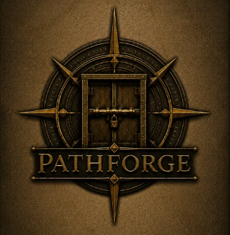

PathForge is an original educational board game designed to promote professionalism, ethical decision-making, and engineering judgment through engaging puzzles and strategic gameplay.
Players must solve engineering-inspired challenges, earn Forge Tiles, and construct a path toward the Gate of Mastery, reinforcing the values expected of future professional engineers.
PathForge is an original board game conceptualized, designed, and developed by MEXE-3301 Group 5 as part of their final project in Codes, Standards, and Professional Ethics.
The game was created to provide an interactive and enjoyable learning experience that strengthens engineering ethics, professionalism, critical thinking, teamwork, and decision-making.
The concept, gameplay mechanics, story, puzzle categories, and Forge Tile system were created exclusively for PathForge, making it a unique educational board game.
Engineering knowledge is the foundation of every successful decision.
Professional engineers must always uphold honesty, ethics, and accountability.
Respect, responsibility, teamwork, and continuous learning are essential.
Every challenge encourages logical reasoning and sound engineering judgment.
PathForge was created as an academic project to demonstrate that learning engineering ethics and professionalism can be engaging, interactive, and enjoyable through game-based learning.
This project reflects the creativity, collaboration, and dedication of MEXE-3301 Group 5 in designing an original educational board game for Mechatronics Engineering in Academe.